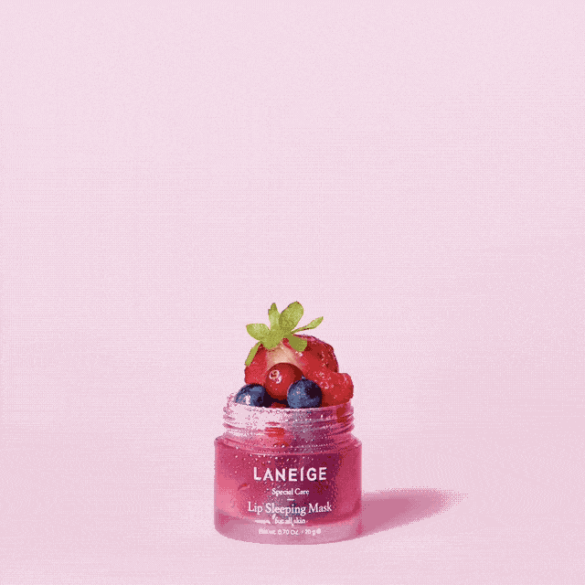

INFO
Laneige (Hangul: 라네즈) is a South Korean cosmetics brand launched by Amore Pacific in 1994. Its name comes from the French "la neige", which translates to "the snow". The brand's flagship products include its Water Bank skin care line, Water Sleeping Mask, BB Cushion foundation and two-tone lipsticks.The brand's central concept is based on its Advanced Water Science technology, an emphasis on skin hydration. Laneige is noted by its parent company as one of their first brands to be launched and find popularity outside Korea.
HISTORY
Laneige was introduced in September 1994, with a skin care collection titled UV Green. Under the campaign "Laneige Protects Women", which emphasises the line's "skin immunity" properties, Laneige selected actress Lee Yoo-ri and talent Kim Si-won to represent the brand. Despite its success, Laneige found that contrary to its image, consumers perceived the brand to be slightly mature. In July 1995, actress Kim Ji-ho became the third face of Laneige. The brand reached a milestone of 100 billion KRW in sales by 1996. Their further campaigns include "Women Who Live Like a Movie" with models Shin Joo-ri, Lee Hye-sang and Chae Rim, both notable figures during the 1997 Asian financial crisis.
A mid-1999 campaign with the slogan "Everyday New Face", accompanied by actress Lee Na-young, reenergized sales for Laneige; by 2002, the brand was number one on AC Nielsen's Brand Power Index. In 2002, Laneige expanded into the greater Asian market with its first international stores in Hong Kong and Shanghai. After opening over 200 stores in eight Asian countries, Laneige entered Europe by opening its first store in Moscow, Russia.
The brand then launched its first cosmetics line in 2007, and began targeting male consumers with Laneige Homme that same year.In September 2017, Laneige partnered with cosmetics retailer Sephora to relaunch its brand in the United States, with the exclusive debut of its Lip Sleeping Mask. The brand was previously available at American retailer Target from 2014 to 2015, and its offerings have been stocked by Sephora Canada since September 2015.Laneige redirected its focus to its "moisturizing skincare portfolio" and underwent its first rebrand in five years, introducing a new logo and "Luminous Beauty" concept in early 2019. Sephora's European outlets began to carry the brand in April 2019.
PRODUCTS
Laneige's flagship products include Water Bank Hydro Essence, Cream Skin, Water Sleeping Mask, and Layering Lip Bar.